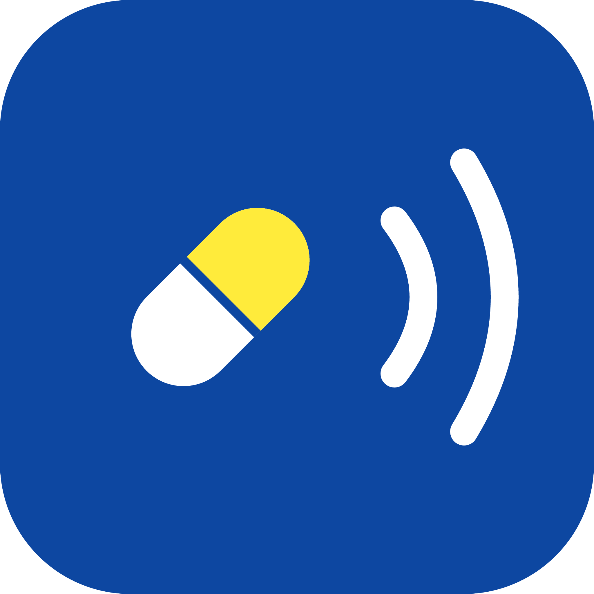
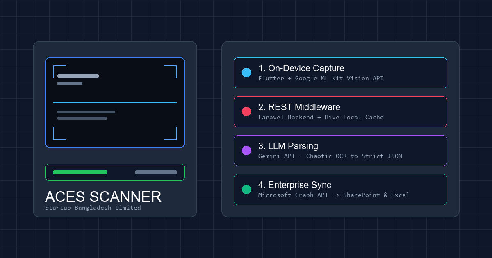
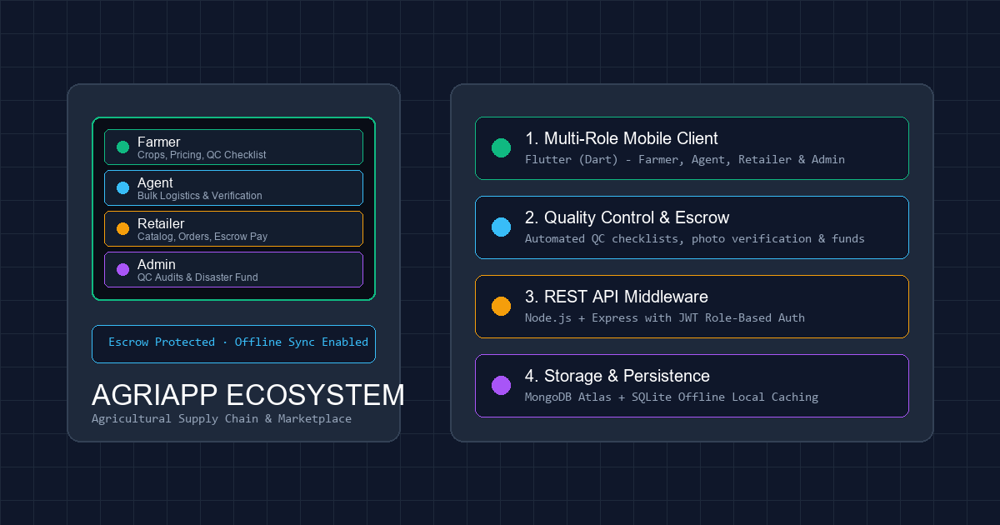
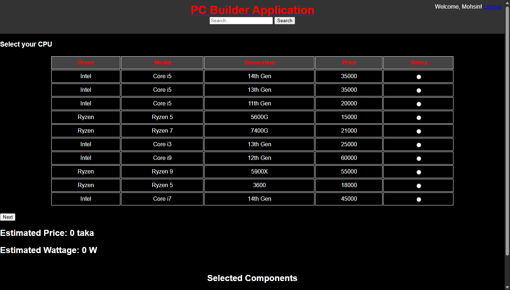

Projects
Selected work. All source code on GitHub.

Ki Oushodh (কি ঔষধ)
Flutter · ML Kit OCR · Local DB · TTS
Offline Android app for elderly and low-literacy users to identify medicines by pointing a camera at a strip. On-device OCR matches against a bundled database of 13,929 medicines. Zero network dependency.

ACES Scanner
Flutter · ML Kit · Laravel · LLM · MS Graph
Enterprise visiting card scanner built for Startup Bangladesh Limited. Captures cards via on-device OCR, normalizes messy text via LLM API, and syncs directly into corporate SharePoint directories.
BUP Bus Tracker
Flutter · Firebase Realtime DB · GeoLocation
Real-time transit tracker for campus buses. Two-app system: a rider app for students and a driver app that pushes live GPS coordinates to Firebase. Deployed on Google Play, used daily.

AgriApp Ecosystem
Flutter · Node.js · Express · MongoDB · Escrow
Multi-role agricultural supply chain platform connecting farmers, field agents, retailers, and administrators. Built with quality inspection checklists, escrow payment protection, and offline local caching.
Tour Buddy
Flutter · Firebase Firestore · Auth · PDF Export
Group travel expense tracker with real-time Firestore sync, algorithmic debt settlement, budget alerts, category analytics, and PDF ledger export. Built to eliminate debt confusion on group trips.

PC Builder & Management System
PHP 8.2+ · MySQL 8.0 · DBMS · JavaScript
Full-stack hardware configuration and e-commerce platform. Features an automated compatibility engine for CPU sockets, RAM, and PSU wattage headroom, backed by a 13-table relational schema and real-time SQL analytics.
.png)
.png)
.png)
.png)
.png)
.png)
.png)
.png)
.jpg)
.jpg)
.jpg)
.jpg)